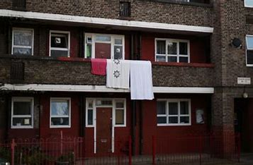

Did You Know...
While it seems that everyone you meet now adays uses technology actively, the Digital Divide in Canada is still quite present. Those who do not have the access, education, or income to participate are being left out of a important part of society. There are several groups in Canada that do not receive sufficient access, and decreasing the digital divide starts with addressing those who are disadvantaged
The most disadvantaged groups in Canada are
Low-income
Digital access is a losing battle to those who cannot afford it. With the high cost of personal devices, wifi, and bandwidth, its no wonder that technology is inadequately distributed to the lower class. Increasing digital literacy among the lower class enables workers to find more variety of work in a workforce that is constantly adapting to technological changes
Read MoreIndigenous and First Nations

are disadvantaged when it comes to being able to participate in the technological economy. Due to improper cellular connection in many Indigenous create a barrier to entering the workforce and celebrating indigenous communities online. Providing digital resources to communities will promote cultural and economic inclusion.
Read MoreRural Communities
Only 37 percent of rural communities in Canada have high-speed internet compared to 97 percent in urban communities . This is a staggering difference that has consequences. Those in rural places may have the literacy but lack access to basic internet. Fighting this issue starts with spreading adequate bandwidth across Canada to places that lack it
Read MoreWhats being done?
Canadian Broadband Fund
The Canadian Broadband Fund is a program launched by the Canadian government in 2019 to invest $1.75 billion over five years to support the expansion of broadband internet services in underserved areas of the country. The program aims to improve access to reliable high-speed internet for Canadians in rural and remote communities, as well as Indigenous peoples. It provides funding to internet service providers and other organizations to build or upgrade broadband infrastructure in areas that are currently underserved.
Connecting Families Initiative
The Connecting Families Initiative is a program that aims to provide low-income families with access to low-cost internet services and affordable computers. The program is specifically targeted at families with children who need internet access for educational purposes. By providing low-cost access to the internet and computers, the program helps to ensure that all children have the tools they need to fully participate in the digital economy.
Indigenous Connectivity Summit
The Indigenous Connectivity Summit is an annual conference in Canada that brings together Indigenous leaders, government officials, and industry representatives to discuss strategies for improving connectivity in Indigenous communities. The summit aims to identify barriers to connectivity and develop solutions to address these challenges. Some of the topics covered at the summit include broadband connectivity, digital literacy, and the use of technology in economic development.But what can I do?
Educate Yourself!
Donate!
.accordion-body, though the transition does limit overflow.
.accordion-body, though the transition does limit overflow.
.accordion-body, though the transition does limit overflow.